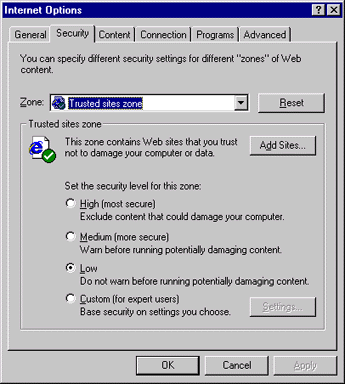

|
| ||
|
| ||
January 29, 1999
Contents
Introduction
The Tao of Error
Counting the Ways
Just Say HTML
Cascading Style Sheets Separate Style from Content
Just Say Dynamic HTML
Sprinkle Scripting on That HTML?
"It Works on My Computer"
Browser Differences
Platform Differences
Configuration Differences
Security
The Nature of the Web
Client- and Server-Side Confusion
For More Information
Getting Started
Cross-Browser and Cross-Platform
Performance
Wait, There's More!
Summary
As Web pages continue to grow in functionality and complexity the need for good error-handling facilities also grows. Yet many of the Web pages I visit seem to be riddled with errors. Sometimes this is a matter of priorities--what's the value of gracefully handling errors? Even if the value is high, there is still the matter of familiarity with error-handling techniques that are useful for the Web.
This first article in a three-part series goes back to basics--discussing the types of errors encountered by today's Web pages. The second installment will focus on handling my own pet peeve, run-time script errors (don't worry, you'll know what this means before we're through). I'll conclude the series with a host of error-prevention tips designed to save you from pulling out too much hair (hopefully your own) in frustration.
Envision going to your boss with the information that you need to cut some of the features planned for your Web site redesign in order to implement and test good error handling. How will that go over? When facing a tight schedule, Web producers are under intense pressure to complete features. In this frame-of-reference, unfortunately, the value of good error handling is not always well recognized.
The way to counter this is to acknowledge an emerging Web trend. Web pages have been traditionally perceived as static documents, but increasingly, they act like applications. On Web sites like Microsoft Investor , in addition to browsing up-to-date financial information, users can access and modify critical personal financial data. Could you imagine shipping an application that didn't handle potential errors in a way that gently leads users to safe ground? Whether users perceive the Web as a reasonable place to conduct their critical business derives in no small part from their collective perception of how safe the Web is. And error messages don't inspire confidence in a Web site.
, in addition to browsing up-to-date financial information, users can access and modify critical personal financial data. Could you imagine shipping an application that didn't handle potential errors in a way that gently leads users to safe ground? Whether users perceive the Web as a reasonable place to conduct their critical business derives in no small part from their collective perception of how safe the Web is. And error messages don't inspire confidence in a Web site.
Once you've established the value of error-free pages, you must establish a foundation of high quality testing. The most important contributing factors toward high quality testing is hiring smart testers who are as influential as your developers and producers. Support this with a thorough testing plan that is completely integrated into the planning and development of your site. It is quite possible for developers to act as testers too, but there is an inherent conflict of interest in that dual role, and it requires supreme discipline to wear those two hats.
Today's Web pages range in complexity, and therefore span a corresponding set of potential errors. We'll start with the simpler things before tackling the trickier stuff.
The simplest Web pages are pure HTML and nothing more. That means they only contain HTML tags with corresponding text, image and audio content. These fairly simple, static pages typically only suffer from HTML syntax errors, such as misspelling the name of a tag or attribute, or leaving off an end tag. Many HTML tags include attributes that reference separate files, leading to common errors of omission where the referenced file does not exist at the indicated location.
The good thing about pure HTML pages is that errors don't lurk unseen, waiting to jump out and bite you at the worst possible time-like after you go live on the Web. If you have an error in this type of page it will become apparent while the page is loading, or immediately after loading. Thus, a simple testing methodology will uncover all the problems right away-just view the page for accuracy.
The one exception (hey, there's always an exception--except when there isn't) is missing hyperlinks (an error of omission), since the browser won't reference a link until the user clicks it.
Modern Web development tools (such as Microsoft® Visu al InterDev™ 6.0 ) inspect your HTML files for syntax errors and missing links while you develop them. Many tools offer visually-based methods to create Web pages that will write the HTML for you; besides being easier, this helps avoid typos, omissions, and other errors of that sort.
) inspect your HTML files for syntax errors and missing links while you develop them. Many tools offer visually-based methods to create Web pages that will write the HTML for you; besides being easier, this helps avoid typos, omissions, and other errors of that sort.
Since style sheets are HTML element-based rules for controlling how HTML content is rendered on your Web pages, potential cascading style sheet (CSS) errors are similar to those for HTML--that is, syntactical problems and befuddling presentation issues due to developers misinterpreting the technical documentation. However, CSS introduces the following important concepts, which generally lead to more, and different, errors in the development phase (especially for new developers).
Microsoft Internet Explorer 4.0 introduced new functionality for precisely controlling the appearance of HTML content in an interactive, dynamic manner. It's called dynamic HTML (DHTML), and is created by invoking a combination of CSS and HTML in script (JavaScript or Microsoft VBScript)--including new HTML attributes and reinvigorated use of less-used elements. On the one hand this complicates mastering the necessary syntax for creating the coolest Web pages (there's more stuff to screw up). On the other hand, the expanded interactive functionality in DHTML presents a more challenging set of new presentation issues to sort out than getting the syntax right. Thus, you're more likely to run into unexpected glitches because you weren't clear on the documented behavior for a given presentation effect.
Also, interactivity is accomplished by modifying the presentation in response to user input, complicating the process for exposing errors, because now they may not show up right away. Whereas simply viewing a static Web page will visit its entire code path, a dynamic Web page won't expose all its problems until you interact with it--all of it.
Web pages become interactive by executing scripts that respond to user input. But this interactivity comes with a price-a whole new set of potential errors. And here's the kicker: You can eliminate errors in scriptless pages before going live on the Web, but there is no way to eliminate all of the errors that can crop up in scripted Web pages. In other words, unless your scripts anticipate and handle all possible errors, users are vulnerable to encountering some bewildering error messages.
Errors are unusually introduced when you think you know how something works, but you really don't. In theory, conducting a thorough code review--with your peers or by yourself--will find all errors in logic. Even Star Trek's Spock character occasionally exhibited errors in logic (usually that was his human side poking through). In practice, unless Spock is one of your peers, even the most thorough code review will miss some logic errors. Errors in logic generally result in either a syntax error or a run-time error--let's examine both kinds.
Scripting languages have precise rules for proper construction of script statements. Fortunately, the browser's script engine parses all your script while the page is loaded, regardless of whether any of it will ever be executed-so even a single syntax error will immediately result in an error message. This is a good thing because it enables a process for exposing all your syntax errors during the development phase (just load the page), and thus preventing users from needlessly seeing syntax error messages. Unfortunately, configuration differences in the computers viewing your pages immensely complicate eliminating syntax errors.
An obvious configuration difference arises when browser vendors implement proprietary script engines that are not supported by other vendors. For example, Netscape browsers do not support Microsoft's VBScript language. So using a Netscape browser to view pages created with VBScript will always produce a syntax error (unless, as you'll see, the VBScript executes on the server).
Even when vendors agree on a standard script language, there is no such thing as perfect adherence to a standard. For example, both Microsoft's JScript® and Netscape's JavaScript already existed when they agreed to support the ECMAScript Language Specification (ECMA-262) ). That agreement didn't automatically eliminate previously existing incompatibilities between JScript and JavaScript. And even ignoring that, by necessity Microsoft and Netscape update their language to conform to new ECMAScript features at their own pace. For example, Microsoft introduced support for JScript exception handling before Netscape did because we were first to market with a browser update-which leads us to a bigger problem.
). That agreement didn't automatically eliminate previously existing incompatibilities between JScript and JavaScript. And even ignoring that, by necessity Microsoft and Netscape update their language to conform to new ECMAScript features at their own pace. For example, Microsoft introduced support for JScript exception handling before Netscape did because we were first to market with a browser update-which leads us to a bigger problem.
The thorniest configuration problem contributing to syntax errors is that vendors regularly update their script languages with new and compelling features that aren't supported in previous versions. While you can take steps to make sure that scripts using new language features only execute in compatible configurations, new features sometimes introduce new syntax that is not backward compatible. So users with incompatible browsers can see syntax errors in the new feature even if you actually execute an alternative script for their browser.
I will go over several techniques that you can use to deal with these problems in the next article in this series about run-time errors. As you are about to learn, these yucky configuration issues don't just cause syntax errors, they can lead to run-time errors as well. Thus, similar techniques can be used in both instances.
Here's where things start getting interesting. Whereas syntax errors will show up right away when the page is loaded, run-time errors don't happen until the script is executed by the browser's script engine (hence the term: run-time). Worse, various factors can conspire such that a given script expression can execute flawlessly while you are testing it, yet fail, say, when you demo the page in a business meeting. Most run-time errors are caught by conceiving a thorough testing plan that exercises all possible paths through your code under the conditions you expect to encounter in "real life."
However, life is unpredictable at times, especially on the Internet, and even the best-laid test plans will miss things. Depending upon what you are doing, some run-time error conditions are unavoidable. For example, a data-driven Web page may encounter an error opening a connection to its data-provider. So, you must write error-handling code for that eventuality. In fact, when a smooth user experience is a high priority, a significant portion of the development effort is often spent identifying and gracefully handling potential failure points.
Run-time errors are also called exceptions because they cause a deviation from the normal path of script execution. That's because when run-time errors happen, script execution is immediately halted. The script engine assembles some basic information about the error and invokes an exception handler. This is where you can regain control by providing your own exception-handling facilities. If you don't, then the browser will use its default exception handler, which means the user will see a standard dialog box containing information about the error (generally unintelligible to most users) and asking if they would like to continue (as if the user will know!). With Internet Explorer 5 the default exception-handler has been revised to a user-friendlier format, but it still sucks (in my opinion).
Now we enter a danger zone, where some things only work in some places. These can be the most frustrating problems to track down precisely because they never happen on your own computer, where you are generally best equipped for debugging. Location-based problems are usually due to invalid assumptions. This can include assumptions you made about the target computers viewing your pages or about the conditions under which the pages are viewed. Let's examine the issues that bring even the most steadfast developers to the brink of tears.
Sadly, not all browsers are created equal. "Internet time" plays a role--Web standards evolve very fast and so do the browsers. Incompatibilities arise due to implementation differences for shared features, browser bugs in abundance, or differently supported features.
For example, Internet Explorer correctly observes the World Wide Web Consortium (W3C) recommendation regarding rendering the background for <DIV> elements across the full width of their parent element, whereas Netscape Navigator only renders them as wide as the foreground content. So, while the following example will render red background-color across the width of the <BODY> in Internet Explorer 4.x or greater, it's only as wide as the foreground text in Netscape Navigator:
<DIV STYLE="background-color:red">This text has a red background.</DIV>
Internet Explorer 5 isn't perfect either: It doesn't honor the <STYLE=width> settings on the <BODY> element, while Netscape Navigator 5 does. In the worst case, rendering differences can result in a completely dysfunctional page for a given browser.
Varying implementation of the W3C Document Object Model (DOM) is another difference between browsers. The DOM exposes HTML page elements as objects that can be scripted (learn more about object models below). This enables powerful Web concepts such as dynamically altering the content on a page without reloading. DOM support differences include:
Differences between browsers often arise from implementing cutting-edge features that are in the process of becoming standardized. One great example is the Extensible Markup Language (XML) support in Internet Explorer versus Netscape's tack on XML . XML promises huge benefits deriving from a text-based format for describing vast stores of legacy information in a way that can be easily exchanged between servers, Web pages, applications, or combinations thereof. In the interest of competition, both Microsoft and Netscape are compelled to implement XML (and related technologies) support before it's completely standardized. This inevitably leads to standards fights and differences in implementation. For example, Microsoft's XML parser (the engine that validates XML syntax) is currently better than Netscape's because it more closely adheres to the W3C standard (this will undoubtedly change since both products are still in beta).
. XML promises huge benefits deriving from a text-based format for describing vast stores of legacy information in a way that can be easily exchanged between servers, Web pages, applications, or combinations thereof. In the interest of competition, both Microsoft and Netscape are compelled to implement XML (and related technologies) support before it's completely standardized. This inevitably leads to standards fights and differences in implementation. For example, Microsoft's XML parser (the engine that validates XML syntax) is currently better than Netscape's because it more closely adheres to the W3C standard (this will undoubtedly change since both products are still in beta).
Differences between browsers are rather a pain to deal with, sometimes needing radically different implementation or design approaches in order to accomplish similar affects. You may even have to make hard decisions to only support certain browsers. The key to dealing with browser differences is never assume anything will "just work" cross-browser. This means you need to specifically test your pages in every configuration you intend to support. Adopting a downlevel strategy is another tack that minimizes extra work--focus your development and testing efforts for cutting-edge browser features in a single browser. Then, adopt a lowest common denominator approach for all other browsers by only utilizing features that are known to work cross-browser as expected.
I've included lots of specific information on how browsers differ below.
Architectural differences between computer platforms lead to implementation differences between identical browser versions from the same vendor. For example, Internet Explorer 4.01 SP1 has miscellaneous DHTML differences on Intel-based computers versus Macintosh or Unix computers.
Further, if you include compiled components on your pages (such as a Netscape plug-in or a Microsoft ActiveX™ control), you'll need different versions of these components for every platform you intend to support.
There are even architecturally-based differences between pages viewed on Microsoft Windows® 3.x machines (which are based upon a 16-bit architecture) and the 32-bit versions of Windows (Windows 95, Windows 98, and Windows NT® 4.0 and 5.0). That means some Internet Explorer features are only available on the 32-bit platforms. For example, all of the features and improvements made to the Microsoft Virtual Machine for Java since version 1.x are only available on 32-bit platforms.
I've included lots more information on this below.
Even when browsers are created equal, they are not always configured equivalently. So, customers using the exact same browser on identical computers might see differences in a given page. For example, one customer might disable cookies, thus breaking any functionality on your page that is dependent on cookies. The same goes for a host of other key dependencies that can be independently configured in the browser, including downloading and executing components, script execution, or downloading images and sounds.
In addition to configuration settings available in the browser, there are other settings independent of the browser that can affect a page. For example, different resolution and color depths on otherwise identical computers can impact the rendering of Web pages. For example, images could be displayed in unintended colors, or pages authored for a higher resolution screen might lay out weirdly.
Your best defense against potentially disfiguring configuration problems is thorough testing of your Web site. Your plan needs to include explicit descriptions of exactly what browser and operating system configurations you intend to support. In order to avoid fooling yourself, you should assume that your Web pages will screw up on any configurations you don't explicitly test. At the very least, by being aware of your configuration dependencies and their symptoms, you can anticipate potential customer problems.
Security problems can wreak havoc on today's Web patrons. The problem is that security settings can prevent your site from operating properly to the extent that your scripts depend upon components that could not be created due to the security settings on the client or the server. This can lead to run-time errors.
Probably the most common problems stem from various user-configurable security settings. These settings can prevent the download of certain content, possibly breaking your page. Internet Explorer's user security settings are available on the Security tab in the Internet Options dialog on the View menu for Internet Explorer.

The settings for high, medium, and low security levels in Internet Explorer are mostly relevant to the operation of Web pages that host Java applets, ActiveX controls, or Netscape plugins, but also apply to file downloads, posting data from FORM tags, and more. As shown in Figure 1, the above security dialog for Internet Explorer, the ability to use different security settings for different zones of the Web allows users to loosen security settings only for trusted sites. For example, if your Internet site uses ActiveX controls you might encourage loyal customers (with high security restrictions for generic Internet sites) to add your site to their trusted sites zone.
The second category of common security issues stems from the flip side of the security coin--access to server resources can be secured to a particular set of authorized users. In this case, the user is a server-side script (operating on behalf of the browser who has requested a Web page) accessing resources on other servers or even on the Web server it is executing on.
In fact (as indicated in this Workshop article) the majority of Active Server Pages (ASP) issues handled by Microsoft Developer Support arise from server-side scripts being denied access to certain resources (such as databases and files). For example, if your page creates a server-side component that requires secure access to a database on another server, and your access is denied, then subsequent operations using that component will fail. This will result in an error message. Fortunately, these problems are typically encountered and solved in the development and testing phase, before taking a site live--usually they stem from server-side configuration issues.
The World Wide Web (WWW) is client-server architecture, which means it's a network populated by clients and servers. The client-side is single-user computers and terminals presenting a user interface via a Web browsing application. The server-side is Web or database servers providing clients with shared services and resources.
Hypertext Transfer Protocol (HTTP) is the client-server protocol the WWW is built upon. A protocol refers to the rules for how information is exchanged between the client and the server. This particular protocol is called connectionless and stateless. Connectionless means a connection is maintained between the client and the server only for the duration of a given operation (like requesting an HTML file). As soon as the browser receives a response from the server the connection is closed. Stateless means that once the request is satisfied the server promptly "forgets" anything it ever knew about the client.
This model exposes another set of potential errors, and can also obfuscate the source of some errors I have already discussed.
In practice Web pages often take advantage of the strengths of both the client and server computers in order to optimize where processing takes place. For example, some of the coolest databinding features in Internet Explorer utilize client-side processing in order to provide a more responsive user interface that doesn't rely on the server to do everything. Or, databinding features can also be implemented entirely on the server so the functionality can be delivered on browsers that don't support client-side databinding.
As a result of processing that might occur on the client, the server, or both, it can sometimes be difficult to track down the source of an error. For example, I recently spent an extraordinary amount of time tracking down a server-side scripting problem where I was writing a password hint as a cookie on the client. I spent hours (ouch) researching how to write cookies using the ASP Response object , finally convincing myself this simple code couldn't possibly fail:
, finally convincing myself this simple code couldn't possibly fail:
// write the user's password hint as a cookie under their name Response.Cookies(Username) = PasswordHint;
Finally concluding something else was wrong, I looked harder at the next line of code:
// stop sending this page, redirect the browser to the update page
Response.Redirect("udpate.asp");
Suddenly it hit me. In my ridiculously thorough research I had learned that ASP pages return cookie information to the client's browser using HTTP headers (small bits of information appended to client requests and server responses) accompanying a requested page. The problem was the client wasn't receiving the cookie headers since the originally requested page (containing my cookie writing script) was not being sent. Why? Because the next line of code told the server to return a different page than the one originally requested. I didn't know whether to feel stupid or relieved. But it just goes to show that a thorough understanding of the processes involved will usually help you track down problems (and avoid them in the future).
Strictly speaking, your pages don't necessarily exhibit errors when they battle performance problems on your server. The page might just slow down, becoming less responsive as the server takes longer and longer to respond to too many client requests. Of course, if the server takes too long, then the browser starts timing out requests-providing appropriate error messages after a maximum time has elapsed with no response from the server.
Too much processing and too many users
The power of ASP lies in its ability to execute scripts on the server that dynamically construct the page sent to the client. For example, you can author separate pages (one for Internet Explorer and one for Netscape Navigator, say) and use server-side scripts to decide which one is sent to the client. Whether the URL reflects an HTML file or an ASP file, this process is invisible to the user--they click a link and get a page.
The problem with the extra server-side processing is that it generally takes longer to deliver a page. So, you can service fewer ASP page requests than for straight HTML pages (of equivalent size). Of course, even with only HTML page requests, servers can still bog down from too many page requests.
Fortunately this does not have to be a problem you only face when it is too late--after one or more of your servers have crashed. In the testing phase, tools are available to simulate various levels of activity on your site. Administrative tools are also available for monitoring and analyzing site traffic and Web performance. When coupled with educated guesses for expected site activity and growth, these tools can allow you to respond to current activity as well as plan for the future. See below for more information.
Also, whether you are authoring ASP or HTML pages, there are lots of things that you can do to increase your page performance. We've published many articles about this, and we also offer some development tools that can help you analyze page and server performance. See below for more information.
Connection bandwidth refers to the speed and responsiveness of the user's Internet connection. Unfortunately, bandwidth can vary widely during a given session for a lot of different reasons, none of which are under your control.
As with server performance problems, strictly speaking, variable connection bandwidth doesn't produce any new errors on your Web pages. However, slower connections can expose errors that won't show up as easily on a faster connection. For example, if it takes longer for your page to load, it is more likely that a user could stumble on an error by interacting with a page element that is not yet fully loaded. The onl oad event on the window object indicates all page elements in the <BODY> tag are ready to go, and can be useful for avoiding such invalid assumptions:
... <INPUT disabled name="Button1" type="button" value="OK" onclick="doOK()"> ... <SCRIPT FOR=window EVENT=onload> // create elements with dependencies as disabled, enable them here Button1.disabled = false; // or, use a script variable to indicate whether the page is loaded pageIsLoaded = true; </SCRIPT>
This single article can't possibly teach you everything needed to follow the rest of the articles in this series! Plus, some of the areas I've touched on here won't be covered any further in this series. Fortunately, we have a fairly extensive collection of articles to help get you up to speed.
My friend Nancy Cluts has a knack for demystifying the seemingly obtuse in a fun and engaging way. Here are some of my personal favorites:
The "Browser Versions & Platforms" category in the Essentials area of MSDN Online Web Workshop features several articles on cross-browser and cross-platform issues, such as Nancy's excellent article on authoring cross-platform for Internet Explorer 4.0.
The Web Men have also spoken about authoring for multiple browsers.
Robert Hess addressed this issue in his November 1998 "More or Hess" column titled "Tips to Make Your Web App's Reach Equal Its Grasp." (This wasn't the first time Robert enlightened us on cross-browser issues--peruse the "Archived columns" listed in the left margin of his Tips article for more Hess on this).
You might want to check out my sniffing series for help figuring out whose browser is viewing your site (plus determining other client capabilities).
For some reason, Microsoft and Netscape don't like to enumerate the level of their support for various Web standards in super-specific terms--whereas I've found several external sites that don't seem to have any problems with that:
Nancy waxes on "Maximizing the Performance of Your Active Server Pages" and "Fifteen ASP Tips to Improve Performance and Style."
Mary Haggard wrote the article "Perfo rmance Tuning the Web Server" in her "For Starters" column.
The MSDN Library also has this piece on optimizing ASP and the article "Performance and Scalability Testing."
and the article "Performance and Scalability Testing."
Several articles about enhancing server performance can be found in the "Internet Information Server" topic in the Server Technologies area of the Workshop (including Nancy's latest article about WCat).
Finally, check your favorite bookstores; many books have been written on this subject.
For those of you anxiously awaiting my next installment in this series (an in-depth article on handling run-time errors) here are a couple things you absolutely must check out.
The Visual Basic Programmer's Guide in the MSDN Library has an excellent chapter on error handling. While it's written for Visual Basic programmers, the articles are loaded with generally useful error handling information. Plus, most of the stuff there can apply directly to current and future Microsoft VBScript developers (since VBScript is just a subset of the Microsoft Visual Basic® language). You can find these articles in the online MSDN Library. Or, if you have a recent MSDN Library CDROM set, search it for the article "Debugging Your Code and Handling Errors."
You can also get a real taste for what I'll be writing next in Michael Wallent's October 1997 column for DHTML Dude titled "Seeing the Error of Your Ways in DHTML."
In this first in a series of articles about handling and avoiding errors on Web pages, I talked about the various ways in which Web pages will throw off errors. I also talked about the unsung importance of good error handling. In all of this, I speak from the experience of an often frustrated, error-prone computer user, and a professional software developer who consistently underestimates the effort required for excellent error handling.
I'm keenly interested in feedback from my readers about anything you think I might have missed (or messed up). Or, if you have a particular error-handling tidbit I'd also love to hear from you.
Finally, I'd like to thank Raymond Manning, a former peer from my days in the Windows CE team. Ray spent many months drumming into me the importance of planning ahead in order to achieve the very best in good error handling. Thank you, Ray.
Did you find this material useful? Gripes? Compliments? Suggestions for other articles? Write us!
© 1999 Microsoft Corporation. All rights reserved. Terms of use.